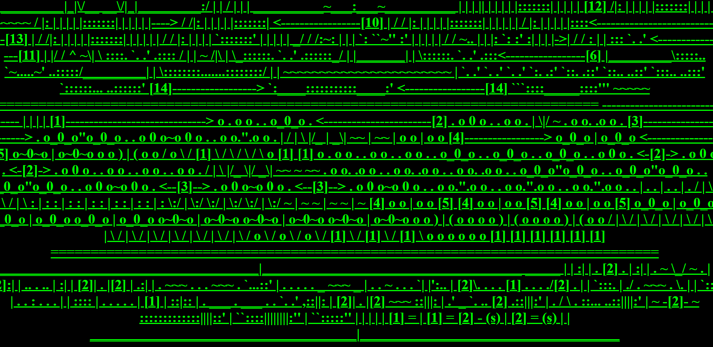
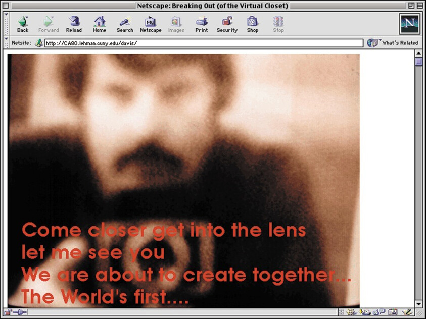

| Web Artist | Characteristics | Thumbnail Image |
|---|---|---|
| JODI | graphically chaotic, unpredictable navigation, abstract imagery [source citation] |  |
| Olia Lialina | Collage style works |
|
| Douglas Davis | Photography based work |  |
| Aurelia Harvey | 2D pixel Game like designs | |
| Michael Samyn | 3D Game like designs and works | |